Many providers
Students may need to explore several service categories while managing an unfamiliar international move.
IDP Education · UX Designer
At IDP Education, I initially worked on redesigning course listing and course detail pages. I then moved to Student Essentials, helping students discover practical services for their move abroad.
Part 1 · Course discovery
I redesigned course listing and course detail pages on the IDP website. Those historical screens have not yet been supplied, so this section intentionally stays at the level of my confirmed contribution.
The live pages have changed since my work and are linked only as current-product references, not as interfaces I designed.
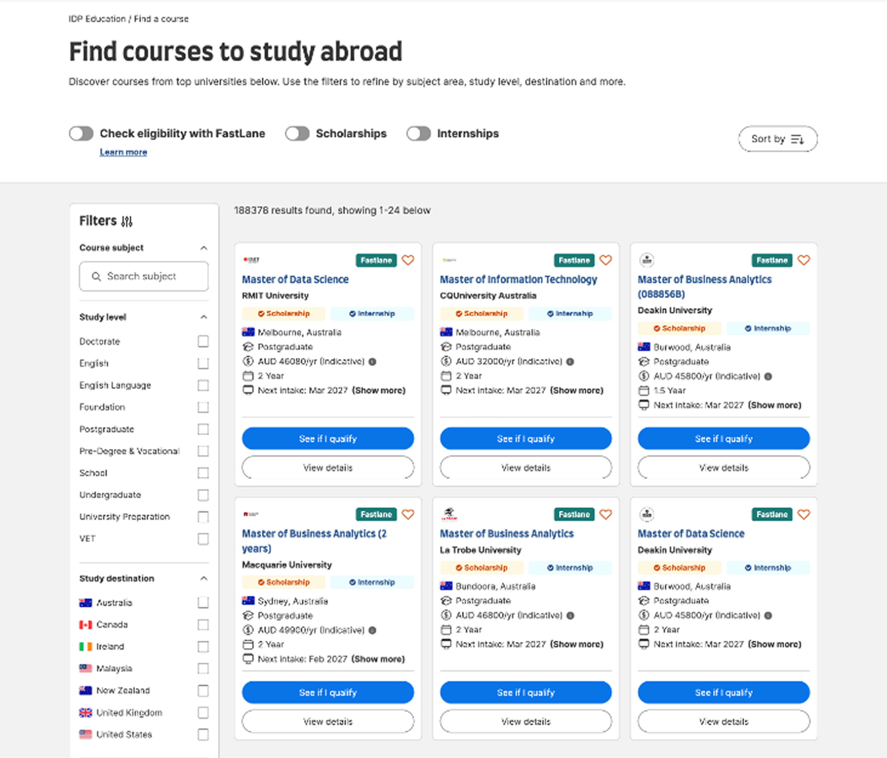
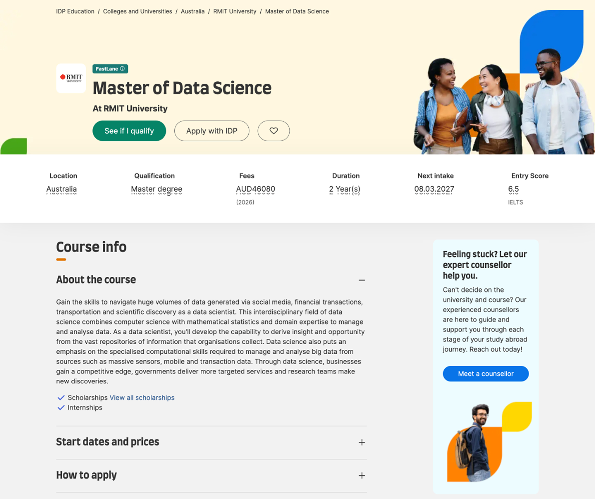
Current-product context: These live IDP pages have evolved since 2018–2021. They provide product context only and are not evidence of the historical interfaces I designed.
Part 2 · Student Essentials
Preparing to study abroad involves more than securing admission. Students also need to consider accommodation, financial services, insurance, connectivity, and other practical arrangements.
My confirmed work focused on a central service-discovery experience that helped students understand available services and identify where to learn more or enquire.
Students may need to explore several service categories while managing an unfamiliar international move.
Help students see what services are available, why each may matter, and where to take a next step.
Make relevant services easier to discover and provide clear routes to information or enquiry.
01 · Illustrative profiles
Priya and Rahul are illustrative profiles used to frame different preparation needs. They are not presented as verified interview participants.
A student preparing for her first move abroad. She needs a clear starting point for practical arrangements and information she can trust.
A working professional preparing to study abroad. He needs to understand his service options efficiently while balancing preparation with work.
02 · Journey and opportunities
The supplied screens demonstrate service discovery and enquiry. Preparation checklists, progress tracking, and destination guidance are future opportunities that would require additional design and validation.
What practical arrangements should I consider?
Introduce service categories.Which services may be relevant?
Explain each service and its purpose.Where can I learn more or enquire?
Provide clear routes to the next step.What remains to be arranged?
Future opportunity · checklist.What support might I need?
Future opportunity · destination guidance.03 · Storyboard
The storyboard follows a student from an offer letter through service discovery and preparation. Checklist and progress moments are conceptual opportunities, not demonstrated delivered functionality.
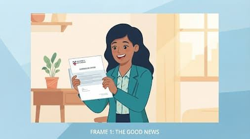
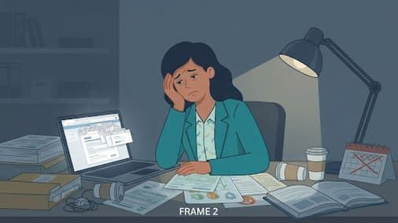
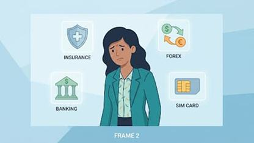
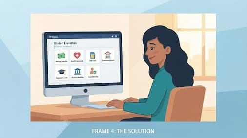
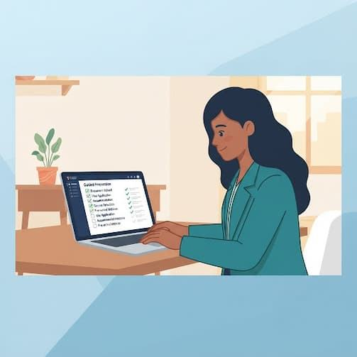
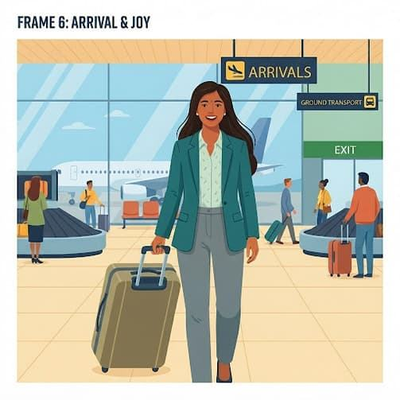
04 · The interface
The supplied interface shows a central Student Essentials overview, short explanations across service categories, and accommodation partner cards with enquiry routes.
The original embedded visuals below preserve the historical IDP product branding. Select any image to view it at full size.
The overview establishes the service proposition and provides a clear entry point before students explore individual categories.
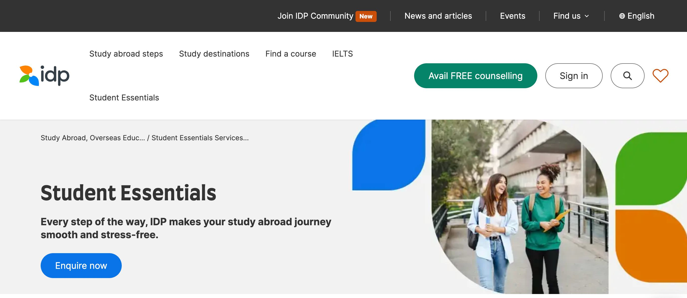
Short descriptions introduce education loans, money transfer, health insurance, banking, accommodation, SIM cards, guardianship, forex, and student identity services.
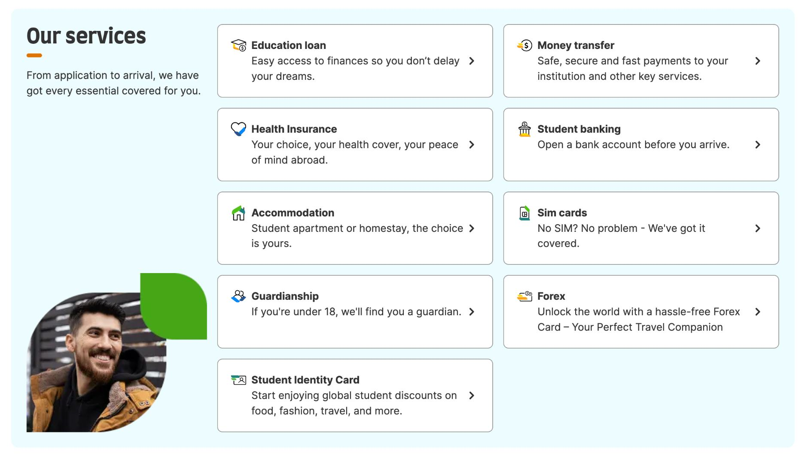
Partner cards surface accommodation choices and provide an explicit route to enquire. This demonstrates discovery and handoff, not a claim of unified booking or progress tracking.
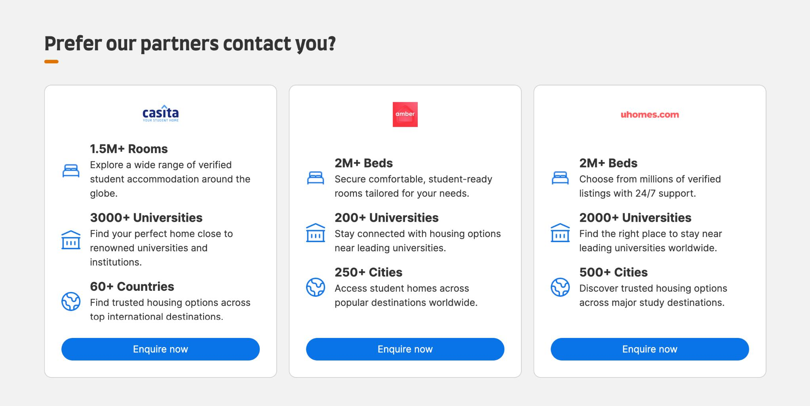
05 · Intended benefits and validation
The intended student benefit is a clearer starting point, easier discovery, and more visible next steps. For the business, the objective is more relevant service engagement and enquiries.
No verified outcome data is established in the supplied files, so the measures below are a test plan rather than reported results.